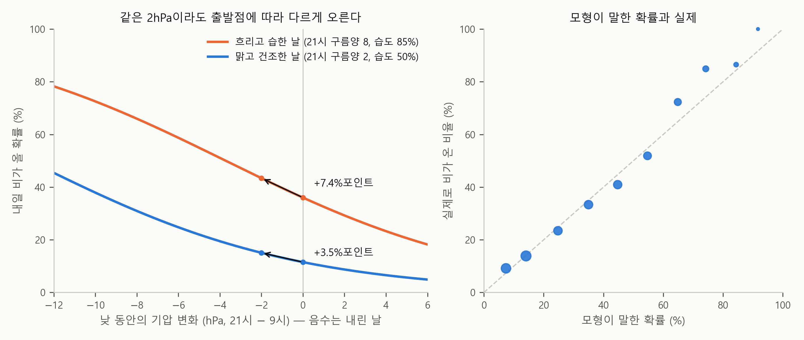

1. 보고서 — 오늘 저녁의 날씨로 본 내일 비의 확률#
이번 장의 주제는 로지스틱 회귀(logistic regression)입니다. 어떤 일이 일어났는지를 “예” 아니면 “아니요”로 기록할 때, 그 일이 일어날 확률을 회귀식으로 설명하는 방법입니다. 세상에는 이런 결과가 아주 많습니다. 은행은 대출을 받은 사람이 돈을 제때 갚을지를 따지고, 통신사는 어떤 고객이 다음 달에 해지할지를 가늠합니다. 쇼핑몰은 장바구니에 물건을 담은 사람이 실제로 결제할지를, 병원은 퇴원한 환자가 한 달 안에 다시 입원할지를 살핍니다. 학술 연구도 마찬가지입니다. 졸업생이 취업했는가, 유권자가 투표했는가, 흡연자가 1년 뒤 담배를 끊었는가처럼 결과가 “했다, 안 했다”로 기록되는 연구가 경제학, 경영학, 의학, 정치학 어디에나 있습니다. 이런 결과를 다룰 때 가장 먼저, 가장 널리 쓰이는 방법이 로지스틱 회귀입니다.
지금까지 이 책의 회귀분석은 결과가 숫자였습니다. 단순회귀분석 장과 다중회귀분석 장에서는 아파트의 거래가격을, 횡단면 분석 장에서는 혈압을, 인과 추론 장에서는 소득을 설명했습니다. 모두 크고 작음이 있는 양이죠. 이번 장의 결과는 크기가 없습니다. 일어났으면 1, 일어나지 않았으면 0입니다. 1과 0은 일어났는지를 숫자로 적은 표시일 뿐, 크기를 뜻하지 않습니다. 숫자를 맞히는 일을 회귀, 종류를 맞히는 일을 분류라고 합니다. 내일 비가 오는지 안 오는지는 두 종류 가운데 하나이므로, 이번 장의 문제는 분류(classification) 문제입니다. 이름에 “회귀”가 붙어 있지만, 로지스틱 회귀는 분류 문제에 쓰는 회귀식입니다. 다만 이번 장이 알고 싶은 것은 “온다, 안 온다”라는 답 하나가 아니라 그 일이 일어날 확률입니다.
이번 장의 예시는 날씨입니다. 오늘 저녁의 날씨로 내일 비가 올 확률을 설명해 봅니다. 일기예보에서 날마다 듣는 “내일 강수확률 30%”가 바로 이런 숫자입니다. 단순회귀분석 장에서는 회귀직선이 하는 일을 일기예보에 빗대 설명했는데, 이번 장에서는 비가 올 확률을 데이터로 직접 추정해 봅니다.
데이터 — 서울 관측소의 10년#
데이터는 기상청의 종관기상관측(ASOS) 기록입니다. 종관기상관측은 전국의 관측소에서 같은 시각에 기온, 기압, 습도, 바람, 구름양, 강수량을 측정하는 기상청의 기본 관측입니다. 이번 장은 그 가운데 서울 관측소(지점 번호 108) 한 곳의 기록을 씁니다. 기간은 2016년 1월 1일부터 2025년 12월 31일까지 10년, 3,653일입니다.
데이터는 두 가지를 받았습니다. 하나는 일별 데이터로, 각 날짜별로 그날의 강수량, 평균 기온, 평균 습도 같은 값이 적혀 있습니다. 다른 하나는 시간별 데이터로, 각 시간별로 그 시각의 습도, 기압, 구름양 같은 값이 적혀 있습니다. 10년이면 87,672시간입니다. 기상청은 이 둘을 “일자료”, “시간자료”라고 부릅니다. 결과(내일 비가 왔나)는 일별 데이터에서, 설명변수(오늘 저녁의 날씨)는 시간별 데이터에서 가져옵니다.
받는 방법은 두 가지입니다. 기상청의 기상자료개방포털에 회원으로 가입하고 로그인하면 기간과 관측소를 골라 CSV 파일로 받을 수 있습니다. 공공데이터포털에서는 API로 받을 수 있습니다. API는 프로그램이 데이터를 요청하면 데이터를 보내 주는 창구입니다.
이번 장은 API를 썼습니다. 공공데이터포털에서 “기상청_지상(종관, ASOS) 일자료 조회서비스”와 “시간자료 조회서비스” 두 가지에 활용신청을 하면 인증키가 나옵니다. 인증키는 이 창구를 쓸 수 있다는 일종의 열쇠입니다. 데이터를 요청하는 코드는 AI에게 짜 달라고 했습니다. 사람이 한 일은 회원 가입, 활용신청, 인증키를 파일에 저장하는 것까지였습니다. AI가 짠 코드는 10년치 일별 데이터를 한 해씩, 시간별 데이터를 한 달씩 받아 하나의 파일로 이어 붙였습니다. 2026년 11월 25 ~ 26일에 받은 데이터입니다.
이 데이터는 공공누리 제1유형으로 공개되어 있습니다. 출처를 밝히면 누구나 가공하고 다시 배포할 수 있다는 뜻입니다. 그래서 이번 장의 데이터는 이 책의 사이트에서도 함께 제공합니다.
💡 팁: 인증키는 파일에 저장해 두고 코드가 그 파일을 읽게 하세요. AI와의 대화창에 인증키를 붙여 넣지 않습니다. 대화창에 쓴 것은 AI 회사의 서버로 가고, 인증키는 비밀번호처럼 나만 알아야 하는 것이기 때문입니다. AI에게는 “인증키는 이 파일에 있다”고만 알려 주면 됩니다.
하루가 한 행#
이번 장의 데이터는 한 행이 하루입니다. 하루마다 다음 여섯 가지가 적혀 있습니다. 첫째가 결과이고, 나머지 다섯이 설명변수입니다.
내일비: 다음 날(0시 ~ 24시)의 강수량이 0.1mm 이상이면 1, 아니면 0. 비가 조금 내려도 0.1mm에 못 미치면 강수량이 0.0으로 적히는데, 이런 날은 비 온 날로 세지 않습니다. 눈도 녹인 물의 양으로 강수량에 들어가므로, 이 장의 “비”에는 눈이 온 날도 들어 있습니다
저녁 습도: 오늘 21시의 상대습도(%)
기압 변화: 오늘 21시의 기압에서 9시의 기압을 뺀 값(hPa). 낮 동안 기압이 얼마나 바뀌었는지입니다. 음수이면 기압이 내렸고, 양수이면 올랐다는 뜻입니다. 기압이 내린다는 것은 대개 비구름을 몰고 오는 저기압이 다가오고 있다는 신호입니다
저녁 구름양: 오늘 21시에 구름이 하늘을 덮은 정도. 하늘 전체를 10으로 보고 0에서 10까지로 적습니다. 0은 구름 한 점 없는 하늘, 10은 구름이 하늘을 다 덮은 하늘입니다. 기상청 데이터와 AI 보고서에는 “운량”(전운량)이라는 이름으로 나옵니다
오늘비: 오늘 0시부터 21시까지 비가 내린 시간이 있으면 1, 아니면 0
여름: 6월, 7월, 8월이면 1, 아니면 0
기압은 관측소 높이에서 측정한 값을 바다 높이에서의 값으로 바꾼 해면기압을 씁니다. 관측소마다 높이가 달라서 측정한 값을 그대로는 비교하기 어렵기 때문입니다. 일기도에 그려진 기압도 해면기압입니다.
설명변수가 모두 오늘 21시까지의 값이라는 데 주목하세요. 내일의 비를 설명하는 데는 오늘 21시에 알 수 있는 것만 씁니다. 왜 이렇게까지 측정 시점을 따지는지는 이 장의 마지막 절에서 다시 다룹니다.
빠진 값이 있는 날을 빼면 3,651일이 남습니다. 그 가운데 다음 날 비가 온 날은 1,076일, 29.5%입니다. 열흘에 사흘쯤입니다. 계절에 따라 다릅니다. 여름에는 다음 날 비가 온 날이 43%, 다른 계절에는 25%였습니다. 7월은 49%로 가장 높고, 3월은 20%로 가장 낮습니다.
오늘 저녁 하늘을 보고, 내일 비를#
설명변수를 하나씩 따로 보면 다음과 같습니다. 저녁 하늘에 구름이 한 점도 없던 날, 다음 날 비가 온 비율은 11%였습니다. 구름이 하늘을 다 덮은 날은 72%였습니다. 낮 동안 기압이 4hPa 넘게 내린 날은 60%, 2hPa 이상 오른 날은 17%였습니다. 오늘 비가 온 날은 44%, 오지 않은 날은 24%였습니다.
그런데 이 숫자들만으로는 우리가 정말 알고 싶은 것에 답할 수 없습니다. 실제로는 이 조건들이 한꺼번에 주어집니다. 가령 오늘 저녁 구름이 조금 끼었고, 습도는 높은 편이고, 기압은 조금 내렸다고 합시다. 내일 비가 올 확률은 얼마일까요? 다중회귀분석 장에서처럼 여러 변수를 한꺼번에 넣은 회귀식이 필요합니다.
문제는 결과가 0과 1이라는 데 있습니다. 어려움은 두 가지입니다. 첫째, 데이터에는 확률이 적혀 있지 않습니다. 날마다 적혀 있는 것은 “다음 날 비가 왔다(1)”, “오지 않았다(0)”뿐입니다. 이 0과 1로부터 확률을 끌어내야 합니다. 둘째, 확률은 정의상 0%보다 작을 수도, 100%보다 클 수도 없습니다. 지금까지 쓴 직선의 회귀식은 0%와 100%에서 멈추지 않습니다. 첫째 어려움은 다음 절에서 보듯이 생각보다 간단히 풀리고, 둘째 어려움을 푸는 것이 로지스틱 회귀입니다.
그래서 이 장의 질문은 이것입니다. 오늘 저녁 하늘이 흐리고 공기가 습하며 낮 동안 기압이 내렸다면, 내일 비가 올 확률은 얼마일까요? 그리고 기압이 조금 더 내렸다면, 그 확률은 얼마나 올라갈까요?
이 질문을 AI에게 맡겨 봤습니다. AI가 데이터 파일을 열어 날마다 앞의 여섯 가지를 만들게 하고(설명변수는 21시까지의 값만 쓰도록 했습니다), 다섯 가지 설명변수로 내일 비가 올 확률을 로지스틱 회귀로 설명하는 1쪽 보고서를 요청했습니다. 계수와 함께 그 계수를 확률의 말로 바꾼 숫자도 보여 주고, 모형이 말한 확률이 실제와 맞는지도 확인해 달라고 했습니다. 그렇게 받은 보고서가 아래에 있습니다. 먼저 한 번 읽어 보세요. 오즈비나 평균 한계효과처럼 처음 보는 말이 나와도 괜찮습니다. 그 말들을 이해할 수 있게 만드는 것이 이 장의 일입니다.
AI가 만든 1쪽 보고서
오늘 저녁의 날씨로 본 내일 비의 확률 — 로지스틱 회귀
분석 대상: 서울 3,651일 (2016년 1월 1일 ~ 2025년 12월 31일, 빠진 값이 있는 2일 제외) · 결과: 다음 날 비가 왔나 (일강수량 0.1mm 이상, 눈 포함, 1,076일 = 29.5%) · 출처: 기상청 종관기상관측(ASOS) 서울 지점 일자료·시간자료, 공공데이터포털
요약
오늘 흐리고 습하며 낮 동안 기압이 4hPa 내렸다면 내일 비가 올 확률은 51%다. 맑고 건조한 날 기압이 그대로라면 12%다.
낮 동안 기압이 1hPa 더 내리면 내일비 확률은 평균 2.6%포인트 높다. 다만 같은 2hPa이 맑은 날에는 3.5%포인트, 흐린 날에는 7.4%포인트를 올린다.
모형이 20 ~ 30%라고 한 461일 가운데 실제로 비가 온 날은 23%였다.

그림. 왼쪽: 낮 동안의 기압 변화에 따라 모형이 계산한 내일비 확률. 오늘 비는 오지 않았고 여름이 아닌 날이다. 오른쪽: 모형이 말한 확률을 10%포인트 구간으로 나눠, 구간마다 실제로 비가 온 비율을 찍었다(점의 크기는 일수). 점선 위에 있으면 말한 대로 왔다는 뜻이다.
회귀 결과
내일 비가 올 확률 = 로지스틱(저녁 습도 + 기압 변화 + 저녁 구름양 + 오늘비 + 여름)
계수 |
표준오차 |
오즈비 |
확률 변화 |
\(p\)값 |
|
|---|---|---|---|---|---|
저녁 습도 (21시, %) |
0.011 |
0.003 |
1.01 |
+0.2%포인트 |
< 0.001 |
기압 변화 (21시 − 9시, hPa) |
−0.155 |
0.017 |
0.86 |
−2.6%포인트 |
< 0.001 |
저녁 구름양 (21시, 0 ~ 10) |
0.178 |
0.012 |
1.20 |
+3.0%포인트 |
< 0.001 |
오늘비 (21시까지, 예 = 1) |
0.281 |
0.110 |
1.32 |
+4.7%포인트 |
0.011 |
여름 (6 ~ 8월 = 1) |
0.606 |
0.092 |
1.83 |
+10.1%포인트 |
< 0.001 |
주: \(n\) = 3,651일, 상수 −2.962, 확률 변화는 변수가 1 늘 때 내일비 확률이 평균 몇 퍼센트포인트 달라지나(평균 한계효과)
해석
계수의 부호 — 기압 변화만 음수이고 나머지 넷은 양수다. 저녁이 습하고 흐릴수록, 낮 동안 기압이 많이 떨어졌을수록, 오늘 비가 왔고 여름이면 내일 비가 올 확률이 높다.
오즈비 — 오즈는 비가 올 확률 ÷ 안 올 확률이다. 기압이 1hPa 오르면 이 오즈가 0.86배, 1hPa 내리면 약 1.17배가 된다.
확률 변화는 출발점에 따라 다르다 — 확률은 0과 1 사이에 갇혀 있어 곡선이 S자로 휜다. 표의 2.6%포인트는 모든 날의 평균이고, 맑고 건조한 날(11.5% → 15.1%)보다 흐리고 습한 날(36.0% → 43.4%)에 같은 2hPa이 더 크게 작용한다.
확률이 실제와 맞나 — 모형이 말한 확률과 실제 비율이 대체로 가깝다. 20 ~ 30% 구간은 23%, 40 ~ 50% 구간은 41%였다. 60%를 넘는 구간은 실제가 조금 더 높다.
한계
서울 한 지점의 2016 ~ 2025년에 대한 결과다. 다른 곳이나 다른 시기에는 다시 계산해야 한다.
함께 나타나는 정도를 설명한 것이다. 이 결과로 무엇이 비를 부르는지는 말할 수 없다.
기상청의 강수확률은 수치예보 모형을 바탕으로 만든다. 이 식은 예보가 아니라 관계를 설명한 것이다.
보고서 내려받기: PDF(그림 포함) · 원문(.md)
보고서의 다섯 부분#
보고서는 다른 장의 보고서와 같이 다섯 부분으로 되어 있습니다. 요약, 그림, 회귀 결과, 해석, 그리고 한계입니다.
요약은 세 줄입니다. 첫 줄이 질문의 답입니다. 오늘 흐리고 습하며 낮 동안 기압이 4hPa 내렸다면 내일 비가 올 확률은 51%이고, 맑고 건조한 날 기압이 그대로라면 12%입니다. 둘째 줄은 질문의 뒷부분에 답합니다. 기압이 1hPa 더 내리면 확률은 평균 2.6%포인트 높아집니다. 그런데 같은 2hPa이 맑은 날에는 3.5%포인트, 흐린 날에는 7.4%포인트를 올립니다. 같은 변화가 왜 날마다 다르게 작용할까요? 이것이 이 장의 가장 중요한 물음입니다. 셋째 줄은 모형이 말하는 확률을 믿어도 되는지를 확인한 결과입니다.
그림은 두 패널입니다. 왼쪽 패널의 가로축은 낮 동안의 기압 변화(음수는 내린 날)이고, 세로축은 내일 비가 올 확률입니다. 주황 곡선은 흐리고 습한 날, 파란 곡선은 맑고 건조한 날입니다. 두 곡선 모두 직선이 아니라 휘어 있고, 기울기가 다릅니다. 곡선마다 기압이 0에서 2hPa 내릴 때의 화살표가 그려져 있는데, 주황 곡선의 화살표가 더 가파릅니다. 오른쪽 패널은 모형이 말한 확률(가로축)과 실제로 비가 온 비율(세로축)을 비교한 것입니다. 점들이 점선 근처에 늘어서 있습니다.
회귀 결과의 표는 다중회귀분석 장의 표와 닮은 데가 있습니다. 행은 변수이고, 계수, 표준오차, \(p\)값이 있습니다. 하지만 처음 보는 것도 있습니다. 표 위의 식은 “로지스틱( )”으로 감싸여 있고, 표에는 오즈비와 확률 변화라는 열이 더해져 있습니다. 반대로 다중회귀분석 장의 보고서에 있던 \(R^2\)은 없습니다. 계수 −0.155와 오즈비 0.86과 확률 변화 −2.6%포인트는 모두 같은 변수(기압 변화)에 대한 숫자인데, 셋이 어떻게 이어지는지는 이 장을 읽으며 알게 될 것입니다.
해석은 네 가지입니다. 계수의 부호, 오즈비, 확률 변화가 출발점에 따라 다르다는 것, 그리고 모형의 확률이 실제와 맞는가입니다. 한계는 세 줄입니다. 특히 마지막 줄, 이 식은 예보가 아니라 관계를 설명한 것이라는 말을 기억해 두세요.
이 장의 진행 순서#
다음 다섯 절이 이 보고서를 한 부분씩 설명하고, 보고서 밖으로 넓혀 갑니다.
0과 1을 회귀하면 — 결과가 0과 1일 때 지금까지의 회귀식을 그대로 쓰면 무엇이 나오는가. 0과 1의 평균이 비율이라는 것. 그 회귀식이 확률을 0% 아래로 내놓는 날.
S자 곡선 — 확률을 0과 100% 사이에 가두는 곡선, 로지스틱 회귀. 보고서 그림의 왼쪽 패널과 회귀 결과의 계수.
계수를 어떻게 읽나 — 오즈와 오즈비, 그리고 확률의 차이. 보고서 표의 오즈비와 확률 변화, 요약 둘째 줄.
가장 그럴듯한 계수 — 보고서의 계수와 표준오차는 어떻게 구했나. 실제로 일어난 일을 가장 그럴듯하게 만드는 계수를 찾는 최대가능도 추정, 그리고 보고서에 \(R^2\)이 없는 까닭.
30%라고 한 날 열에 셋 — 모형이 말한 확률을 어떻게 이해하고 어떻게 확인하나. 설명변수의 측정 시점을 왜 따지나. 보고서 그림의 오른쪽 패널, 요약 셋째 줄, 그리고 한계.
다섯 절을 지나면 이 보고서가 왜 이런 모양인지 알게 됩니다. 그리고 AI가 “이 변수의 오즈비는 0.86”이라고 말할 때, 그것을 확률의 말로 옮겨 이해할 수 있게 될 것입니다.